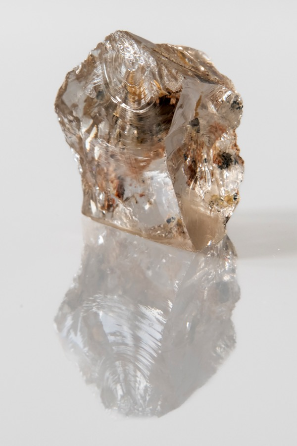
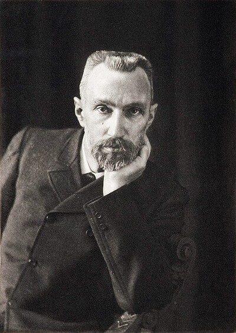
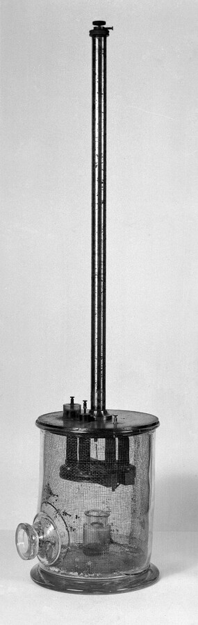
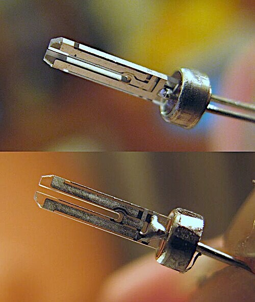

物理学 × 日常のテクノロジー
1880年、パリの研究室でキュリー兄弟は水晶を押して電気を取り出した。その双方向の不思議——圧電効果——が、いまあなたの腕時計とスマートフォンの心臓を動かしている。
ピエール・キュリーとジャック・キュリーが圧電効果を発見。錫箔と接着剤と糸鋸だけで、結晶を圧縮すると電荷が生じることを実証した。
同年の世界：エジソンが白熱電球の特許を取得（1月）。ケルン大聖堂が着工から632年を経て完成（9月）。
キュリー兄弟の発見から145年。水晶振動子は年間数十億個が生産され、スマートフォン、GPS、医療機器、自動車——あらゆるデジタル機器の時間の基準になっている。
腕時計を見る。壁に掛かった時計を見る。スマートフォンの画面右上を見る。時刻が表示されている。表示が1秒ごとに変わる。私たちはそれを当たり前だと思っている。「1秒」がどこから来ているのか、考えたことすらない。
機械式の時計はゼンマイとテンプで時を刻む。あれは人間の手が作った精密な機械だ。しかし、あなたのスマートフォンの中にある「1秒」は、機械ではない。鉱物の振動だ。地球上で最もありふれた鉱物のひとつ——水晶が、1秒間に32,768回震えている。
押すと電気を出し、電気をかけると震える。石がそんなことをする理由は、結晶の原子配列にある。
結晶を押して電気を生み出し、電気で結晶を震わせる。その双方向性を手で触って確かめながら、鉱物の振動がどのように「1秒」を作り出しているかを体験する。
1880年のパリ理学部。ピエール・キュリーピエール・キュリー（Pierre Curie, 1859–1906）
フランスの物理学者。妻マリー・キュリーとともにラジウムを発見し、1903年にノーベル物理学賞を受賞。圧電効果の発見時はまだ21歳の研究助手だった。は21歳、兄のジャック・キュリージャック・キュリー（Jacques Curie, 1855–1941）
ピエールの兄。鉱物学と焦電気の知識を弟と持ち寄り、圧電効果を共同発見した。発見への貢献は対等だったとされる。は25歳。ふたりはシャルル・フリーデルの指導のもと、錫箔錫箔（すずはく）
スズを薄く延ばした金属箔。アルミホイルのようなもので、当時は電極として使われた。現代のアルミホイルとほぼ同じ用途。と接着剤と宝石職人の糸鋸だけで——文字通りそれだけで——水晶やトルマリントルマリン（tourmaline）
ケイ酸塩鉱物の一種。宝石としても知られるが、加熱すると電荷を帯びる「焦電気」の性質があり、キュリー兄弟が圧電効果を予測するきっかけになった。を特定の方向から切り出し、圧縮し、表面に電荷が現れることを測定した。
水晶と聞くと、占いに使われる透明な球体を思い浮かべる人がいるかもしれない。だが水晶——化学式SiO₂——は地球上で最もありふれた鉱物のひとつだ。花崗岩の主成分であり、砂浜の砂粒の大半も水晶（石英）だ。道端の石ころの中にもある。特別な石ではない。あまりにもありふれた石に、極めて特殊な性質が隠れていた——それが圧電効果の発見を際立たせている。

チベット産の水晶結晶（SiO₂）。ありふれた鉱物でありながら、原子配列の非対称性が圧電効果を生む。（原図: JJ Harrison, CC BY-SA 2.5）
結晶を押すと、電気が生まれる。これが圧電効果圧電効果（piezoelectric effect）
ギリシャ語の「piezein（押す）」に由来。特定の結晶に力を加えると電圧が生じる現象。逆に電圧をかけると結晶が変形する。ライターの着火がわかりやすい例。だ。力を加えると結晶内部で正と負の電荷の中心がずれ、表面に電圧が発生する。1cm³の水晶に約2kNの力を正しい方向からかけると、12,500Vもの電圧が生じる。家庭用コンセントの100倍以上だ。ただし電荷量は極めて小さいので感電はしない。ライターの火花が痛くないのと同じだ。
なぜ力が電気になるのか。水晶の結晶は、シリコン原子（正の電荷）と酸素原子（負の電荷）が規則正しく並んでいるが、その並び方が非対称だ。通常は正と負の電荷の中心がぴったり重なっていて電気的に中性。しかし力を加えると結晶が変形し、正の電荷の中心と負の電荷の中心がわずかにずれる。このずれが結晶の表面に電圧として現れる。重要なのは、対称な結晶構造ではこのずれが打ち消し合って電圧が生じないということ。非対称な構造を持つ結晶だけが圧電効果を示す。自然界の32の結晶クラスのうち、圧電効果を持つのは20クラスだ。
翌1881年、物理学者ガブリエル・リップマンガブリエル・リップマン（Gabriel Lippmann, 1845–1921）
ルクセンブルク出身のフランスの物理学者。熱力学の原理から逆圧電効果を予言。1908年にカラー写真でノーベル賞受賞。が「逆もまた成り立つはずだ」と数学的に予言した。電気をかければ結晶が変形する、と。キュリー兄弟はすぐにこれを実験で確認した。押すと電気が出る。電気をかけると変形する。この完全な双方向性が、圧電効果の核心だ。
| 項目 | 直接圧電効果 | 逆圧電効果 |
|---|---|---|
| 入力 | 力（圧縮・引張） | 電圧（電場） |
| 出力 | 電圧（電荷） | 変形（伸縮） |
| 発見 | 1880年、キュリー兄弟が実証 | 1881年、リップマンが予言→キュリー兄弟が確認 |
| 身近な例 | ライターの着火 | クオーツ時計の振動 |
| 応用 | センサー（力→電気信号） | 発振器（電気→振動） |
キュリー兄弟が最初に圧電効果を確認した物質は、水晶だけではなかった。トルマリン、トパーズ、砂糖の結晶、ロッシェル塩——合計5種類の鉱物で実証した。その後、天然・人工を問わず、多くの圧電物質が見つかっている。
| 物質 | 種類 | 特徴と主な用途 |
|---|---|---|
| 水晶（SiO₂） | 天然鉱物 | 安定性が極めて高い。時計・発振器・センサー。現在はほぼ人工合成品。 |
| トルマリン | 天然鉱物 | 温度変化に強い。高温環境の超音波センサー。宝石としても知られる。 |
| ロッシェル塩 | 天然結晶 | 圧電定数が非常に高いが湿気と温度に弱い。初期のマイクロフォンやレコードプレーヤーに使用。 |
| チタン酸バリウム（BaTiO₃） | 人工セラミック | WWII中に発見。水晶の100倍以上の圧電定数。コンデンサー、超音波トランスデューサー。 |
| PZT（チタン酸ジルコン酸鉛） | 人工セラミック | 現在最も広く使われる圧電材料。医療用超音波、インクジェットプリンター、ソナー。鉛を含むため代替材料の研究が進行中。 |
| PVDF（ポリフッ化ビニリデン） | 高分子ポリマー | 柔軟で薄いフィルム状にできる。タッチセンサー、ウェアラブルデバイス。 |
| 骨（コラーゲン） | 生体材料 | 骨に力がかかると微弱な電気信号が生じ、骨の修復・成長を促す。圧電効果は生命の中にもある。 |

ピエール・キュリー
Pierre Curie（1859–1906）
21歳で兄ジャックとともに圧電効果を発見。磁性の研究（キュリー温度）を経て、妻マリーとの放射能研究へ。圧電効果で開発した電気計はラジウム発見にも使われた。46歳で馬車事故により死去。
"These results were a credit to the Curies' imagination and perseverance, considering that they were obtained with nothing more than tinfoil, glue, wire, magnets and a jeweler's saw."
これらの成果は、錫箔と接着剤と針金と磁石と糸鋸だけで得られたことを考えれば、キュリー兄弟の想像力と忍耐力の賜物だった。
— PIEZO.COM "History of Piezoelectricity"、1880年の実験についての記述
発見から40年近く、圧電効果は「研究室の珍品」だった。ピエール自身はこの効果を放射能の測定に転用した——マリー・キュリーとともにラジウムを発見する過程で、圧電電気計が微弱な電荷を測る装置として活躍した。だが圧電効果そのものの応用は進まなかった。

キュリー兄弟が自作した象限型電気計。錫箔と接着剤と糸鋸で組み立てられた素朴な装置が、やがて放射能研究でラジウム発見の決め手となる。（原図: Wellcome Collection, CC BY 4.0）
転機は第一次世界大戦だった。1917年、フランスの物理学者ポール・ランジュバンポール・ランジュバン（Paul Langevin, 1872–1946）
フランスの物理学者。水晶の圧電効果で超音波ソナーを開発。近代的ソナー技術の祖。が、薄い水晶板を2枚の鋼板で挟んだ装置で超音波を海中に発射し、潜水艦からの反射を検出するソナーを開発した。圧電効果の初の実用的応用だ。
そして1921年。アメリカ・ウェズリアン大学のウォルター・キャディウォルター・G・キャディ（Walter G. Cady, 1874–1974）
アメリカの物理学者。1921年に世界初の水晶発振器を開発し「近代圧電技術の父」と呼ばれる。100歳の誕生日前日に死去。が決定的な発見をする。水晶に交流電圧をかけ周波数をゆっくり変えると、ある特定の周波数でだけ水晶が激しく共振することに気づいた。少しでもずれると振動は止まる。この安定した共振共振（resonance）
物体の固有振動数と同じ周波数の力が加わると振動が急激に大きくなる現象。ブランコをちょうどいいタイミングで押すのと同じ。を利用した世界初の水晶発振器が誕生した。
印加する周波数を変えてみよう。水晶の共振周波数に近づくと振幅が急激に増大する。
概念的シミュレーション。共振曲線はローレンツ関数で近似。実際のQ値は数万〜数十万。
✗ よくある誤解
水晶は自然に32,768 Hzで振動する
✓ 実際は
振動数は形と大きさで決まる。音叉型に精密加工し、レーザーで微調整して初めてこの周波数になる。
✗ よくある誤解
クオーツ時計の水晶はすり減る
✓ 実際は
振動はナノメートル単位の微小変形で機械摩耗はほぼない。精度低下の主因は温度変化と電極劣化。
✗ よくある誤解
圧電効果はスピリチュアルな「水晶のパワー」
✓ 実際は
結晶構造の非対称性から生じる物理現象。SiO₂の原子配列の性質にすぎない。
圧電効果の話を文章で読むだけでは実感が湧かない。以下の3つのフェーズで双方向性を手で触って確かめてほしい。
Phase 1 ／ 押す → 電気が出る
水晶をクリック（タップ）して押してみよう。
Phase 2 ／ 電気をかける → 変形する
Phase 3 ／ 共振を探せ
周波数を変えて共振点を見つけよう。振幅が最大になるポイントだ。
体験用の概念的シミュレーション。実際の水晶振動子は真空パッケージ内で動作し変形はナノメートル単位。
共振を見つけたとき、スライダーを少しでもずらすと振幅が急落するのに気づいただろうか。この「頑固さ」が水晶振動子の精度の源だ。共振周波数から外れることを許さない——その性質が時計の正確さを保証する。
クオーツ時計の水晶は1秒間に32,768回振動する。なぜこの中途半端な数字か。32,768は2¹⁵だ。32,768回の振動を15段のデジタル回路で÷2していくと、正確に「1秒に1回」のパルスが得られる。
なぜ32,768 Hzが選ばれたのか
フリップフロップは入力周波数を半分にする。32,768 = 2¹⁵ なので15個つなぐだけで1Hzが得られる。割り算回路が不要で設計がシンプル。紙を半分に折る作業を15回繰り返すと32,768層——その逆をやっている。
周波数が高いほど消費電力は大きい。32,768 Hzは人間の耳に聞こえないぎりぎり上の帯域で、精度と省電力のバランス点。ボタン電池1個で2〜3年動く。1MHzの水晶なら電池は数週間で切れる。
振動周波数は形と大きさで決まる。32,768 Hzの音叉型水晶は約3mm×1mmで腕時計に収まるサイズ。低周波にすると大きすぎ、高周波にすると小さすぎて加工困難。1970年代の量産技術と合致した。
32,768 Hzは物理的必然ではなく、2進数の数学、消費電力、製造サイズの三者が交差する「設計上の最適解」。産業が標準化し後戻りできなくなった面もある。
「スタート」で32,768 Hzが15段の÷2回路を通り1 Hzになる過程を見る。
各段のフリップフロップが周波数を半分に。15段で2¹⁵分の1。実際のICでは数μm角のトランジスタペアで実現。
赤丸は圧電効果・水晶振動子の直接的マイルストーン 白丸は関連する出来事
1880
圧電効果の発見
ピエール（21歳）とジャック（25歳）が水晶やトルマリンに圧力をかけると表面に電荷が生じることを実証。翌年、逆圧電効果も確認。
1910
フォイクトの教科書
『結晶物理学教科書』刊行。圧電効果を示す20の結晶クラスを特定し、テンソル解析で圧電定数を定義。
1917
ランジュバンのソナー
水晶の圧電効果を利用した超音波潜水艦探知機を開発。初の実用的応用。
1921
世界初の水晶発振器
ウォルター・キャディが水晶の共振を利用した発振回路を発明。ラジオ周波数の安定化に革命。
1928
初の水晶時計
ベル研のウォーレン・マリソンが開発。年差30ミリ秒。まだファイリングキャビネット大。
1940s
合成圧電セラミック登場
WWII中に米・ソ・日で強誘電体セラミック（チタン酸バリウム等）が発見。天然水晶の100倍以上の圧電定数。
1950s
人工水晶の時代へ
WWIIで天然水晶（ほぼ全量ブラジル産）が枯渇。ベル研究所が水熱合成法を商業化し、人工水晶の大量生産が始まる。1970年代以降、電子機器の水晶はほぼすべて人工合成品に。あなたのスマートフォンの中の水晶も、オートクレーブで育てられた人工結晶だ。
1969
セイコー・クオーツアストロン
12月25日、世界初の市販クオーツ腕時計発売。価格45万円（トヨタ・カローラとほぼ同額）。月差±5秒。機械式の100倍正確。
現在
年間数十億個の水晶振動子
スマートフォン、PC、自動車、GPS衛星——あらゆるデジタル機器に搭載。1台のスマホに複数個。
圧電効果の本質は「可逆性」にある。力を電気に、電気を力に。この双方向性がひとつの現象からセンサーと発振器というまったく異なる応用を生んだ。ライターの着火は前者、クオーツ時計は後者だ。
ひとつ、よくある疑問に答えておく。あらゆるスマートフォンや時計に水晶を入れるなら、天然の水晶を掘り出しているのだろうか。答えはノーだ。第二次世界大戦中、天然の電子グレード水晶はほぼすべてブラジルから輸入されており、潜水艦による海上封鎖で供給が途絶えた。戦後、ベル研究所が「水熱合成法」——高温高圧のオートクレーブで水晶を「育てる」技術——を商業化し、1970年代以降、電子機器に使われる水晶はほぼ100%が人工合成品になった。天然水晶と化学的にまったく同じSiO₂だが、不純物が少なく、双晶（結晶の向きがずれる欠陥）がない。むしろ天然より品質が高い。
スマートフォンが正確な時刻を刻めるのは、中の米粒より小さな水晶片が1秒間に32,768回震えているからだ。GPSが現在地を10メートル以内で特定できるのも、衛星の原子時計と地上の水晶発振器が正確な時間差を測れるからだ。時間のずれが1マイクロ秒あるとGPSの位置は300メートルずれる。
もっと根本的なことがある。コンピューターのあらゆる計算はクロック信号に同期して行われる。そのクロックの源は水晶発振器だ。メールを送る、動画を再生する、AIに質問する——すべての裏側で水晶が震えている。1880年にキュリー兄弟が錫箔と糸鋸で見つけた現象が、デジタル社会の時間的基盤になっている。
"In experimental work I have learned the value of making a special study of obstacles to see if they can be made to serve a useful purpose. In other words, to convert stumbling blocks into stepping stones."
実験で私が学んだのは、障害物を特別に研究し役に立てられないか考えることの価値だ。つまり、つまずきの石を踏み石に変えるのだ。
— ウォルター・キャディ、IEEE UFFC Milestone記念ページより
キャディの言葉は象徴的だ。水晶の共振は初め「厄介な外乱」だった。回路が不安定になる。だがキャディはその外乱をひっくり返して世界で最も安定した発振器を作った。つまずきの石を踏み石に——圧電効果の歴史そのものがこの姿勢で綴られている。
MIT Media Lab『32,768 Times Per Second』
クオーツ腕時計内部の電子機械的プロセスを人間が知覚できるスケールに拡大した機能する彫刻。1秒間に32,768回の振動が何を意味するかを目に見える形で体験させる。

ケースを外した音叉型水晶振動子。実物は約3mm×1mm、米粒より小さい。この金属の音叉が1秒間に32,768回震えることで、スマートフォンもGPSも動いている。
Développement, par pression, de l'électricité polaire dans les cristaux hémièdres à faces inclinées
圧電効果の最初の報告。たった2ページ。この2ページが145年後の数十億個の産業に繋がっていると思うと不思議な読後感がある。フランス語。
'The Electrical Expansion of Quartz' by Jacques and Pierre Curie
キュリー兄弟の1889年論文の英訳と解説。実験器具の図面が唯一掲載された論文。原文の前に文脈を掴むのに最適。
Milestones: Piezoelectric Oscillator, 1921–1923
キャディによる水晶発振器の発明経緯。本人の言葉が多く引用されており発明者の思考回路が垣間見える。
Milestones: Electronic Quartz Wristwatch, 1969
セイコー・クオーツアストロンの開発史。59Aプロジェクトから1969年クリスマスの発売まで、技術と葛藤の記録。